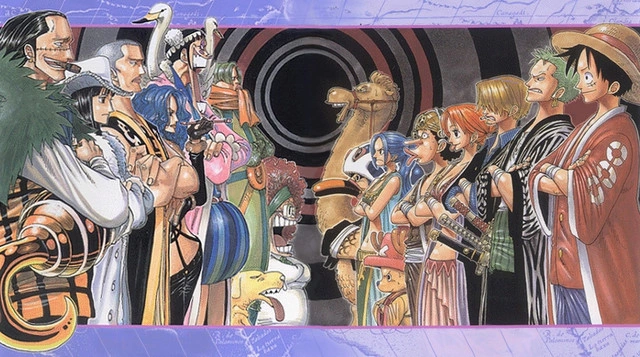
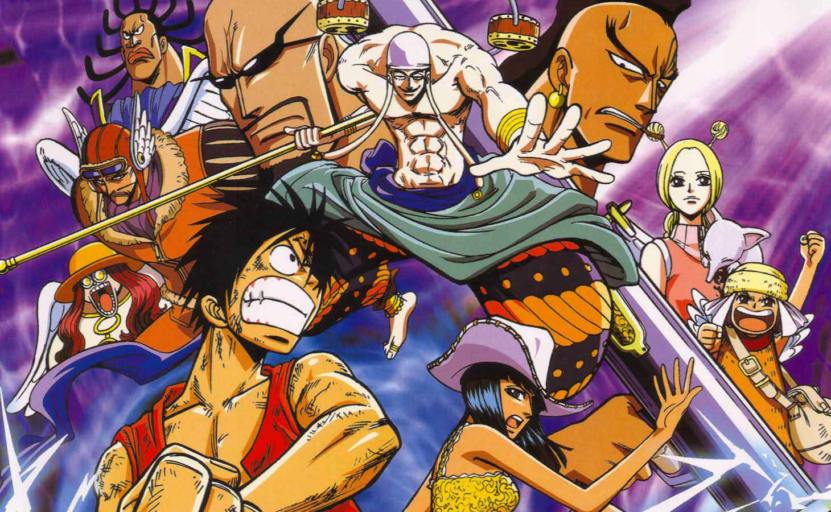
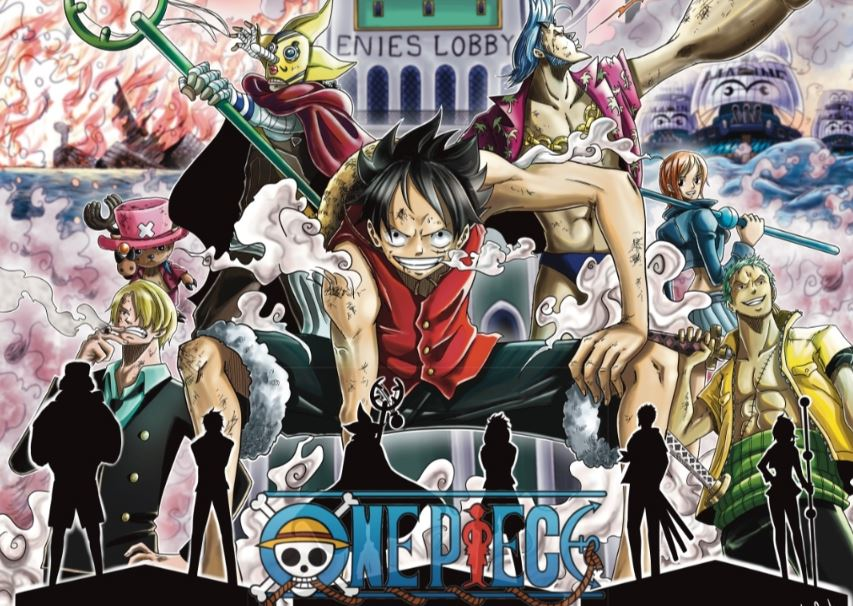
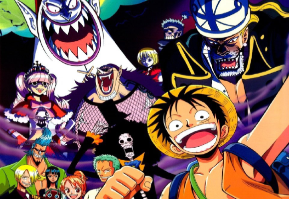
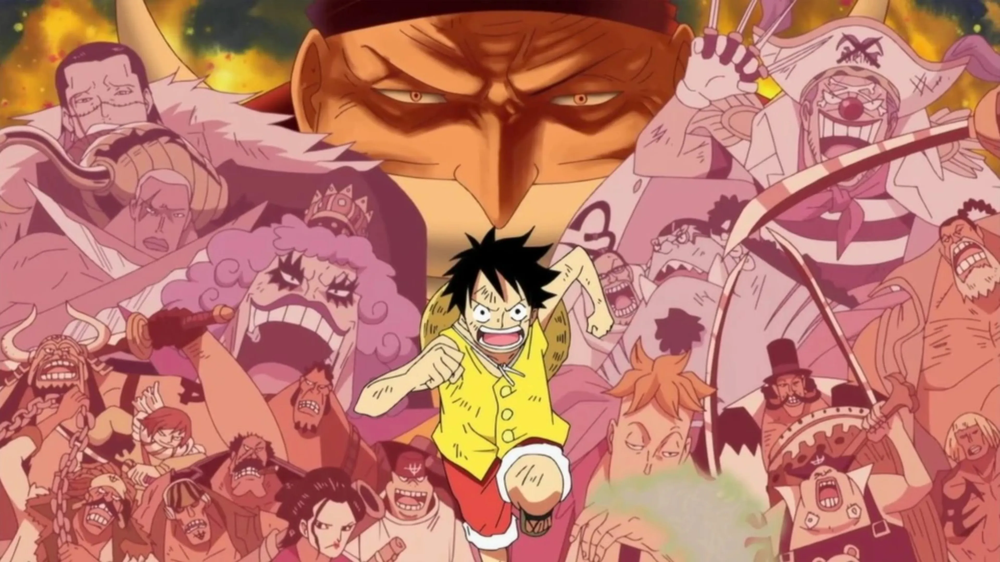
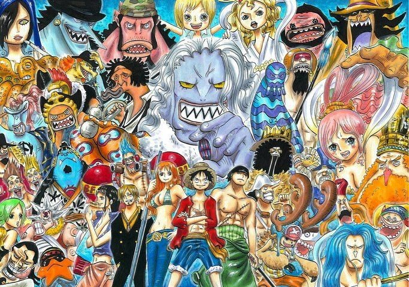
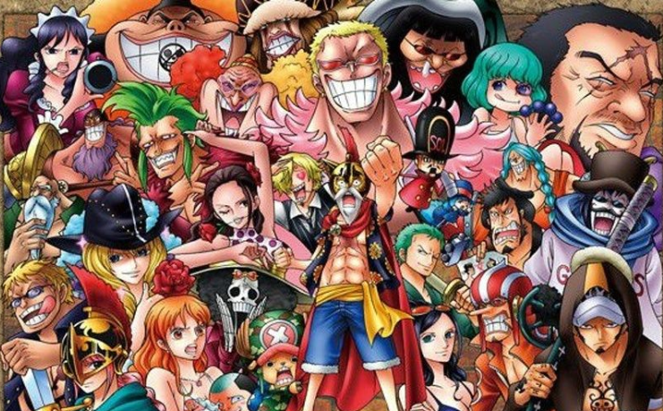
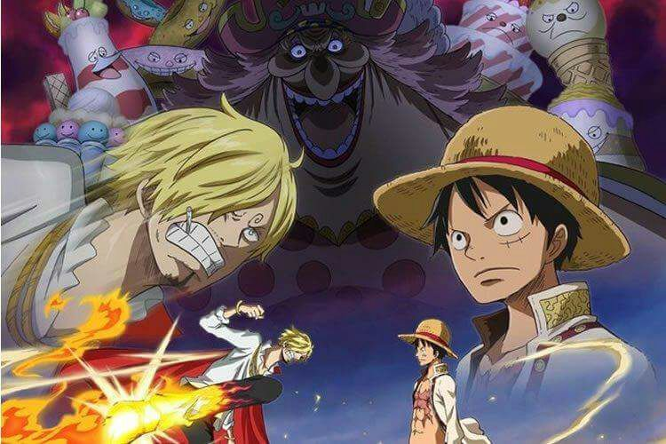
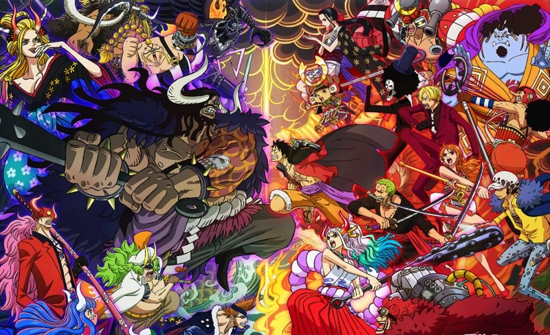
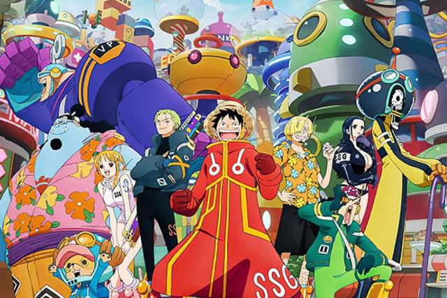

¿De qué trata el anime de One Piece?
One Piece es un manga y anime popular creado por Eiichido Oda que sigue las aventuras de Monkey D. Luffy y su tripulación en busca del legendario tesoro conocido como el One Piece. A lo largo de estas aventuras puedes ver el desarrollo de cada uno de los personajes principales, además de ver si llegarán a lograr conseguir realizar sus sueños. En el siguiente video se puede ver un poco de como es anime:
¿Qué estructura tiene One Piece?
El anime de One Piece tiene una estructura peculiar, pues la historia esta dividida en sagas, y que a su vez cada una de ellas estan divididas en arcos.
Diferencia entre sagas y arcos
Una saga es una serie de arcos que comparten un hilo narrativo común y que llevan a los personajes a un objetivo mayor. Por otro lado un arco es una parte especifica de la saga que se centra en una trama más concreta y tiene su propio desarrollo y conclusión.
Lista de capítulos
| Canon | Canon anime |
|---|---|
| Episodios basados 100% en el manga de One Piece. Es necesario verlos. | Episodios canon exclusivos del anime. Es necesario verlos. |
| Mixto | Relleno |
| Episodios que combinan elementos canon y de relleno. | Episodios que NO estaban basados en el manga original. No es necesario verlos. |
- Saga East Blue

Arco Romance Dawn: 1-3 (canon)
Arco Buggy, el payaso: 4-8 (canon)
Arco Capitán Kuro: 9-18 (canon)
Arco Restaurante Baratie: 19-30 (canon)
Arco Arlong Park: 31-44 (canon)
Arco Piratas de Buggy: 45-47 (mixto)
Arco Loguetown: 48-49 (canon), 50-51 (canon anime), 52-53 (canon)
Arco Dragón milenario: 54-60 (relleno), 61 (mixto)
- Saga Arabasta
Arco Reverse Mountain: 62-63 (canon)
Arco Whiskey Peak: 64-67 (canon)
Arco Koby y Helmeppo: 68-69 (mixto)
Arco Little Garden: 70-77 (canon)
Arco isla Drum: 78-91 (canon)
Arco Arabasta: 92 (canon), 93 (canon anime), 94-97 (canon), 98-99 (relleno), 100 (canon), 101 (mixto), 102 (relleno), 103-130 (canon)
Arco Historias independientes: 131-135 (relleno)
- Saga Skypiea
Arco Los piratas de Zenny: 136-138 (relleno)
Arco Niebla arco iris: 139-143 (relleno)
Arco Jaya: 144-152 (canon)
Arco Skypiea: 153-195 (canon)
Arco Fortaleza naval G-8: 196-206 (relleno)
- Saga Water 7
Arco Davy Back Fight: 207-212 (canon), 213-216 (relleno), 217-219 (canon)
Arco Ocean´s dream: 220-224 (relleno)
Arco Regreso de Foxy: 225 (relleno), 226 (mixto)
Arco Almirante Aokiji: 227-228 (canon)
Arco Water 7: 229-255 (canon)
Arco Enies Lobby parte 1: 256-278 (canon)
Arco Especial Mugiwaras: 279-283 (relleno)
Arco Enies Lobby parte 2: 284-290 (canon), 291-292 (relleno), 293-302 (canon), 303 (relleno), 304-312 (canon)
Arco Regreso a Water 7: 313-316 (canon), 317-319 (relleno), 320-325 (canon)
- Saga Thriller Bark

Arco Ice hunter: 326-336 (relleno)
Arco Thriller Bark: 337-353 (canon), 354 (mixto), 355-381 (canon)
Arco Spa Island: 382-384 (relleno)
- Saga Guerra de Marineford
Arco Los Piratas Duval: 385-389 (canon)
Arco Archipiélago Shabondy: 390-405 (canon), 406-407 (relleno)
Arco Amazon Lily: 408-417 (canon), 418-420 (canon anime), 421 (mixto)
Arco Impel Down: 422-425 (canon)
Arco Little East Blue: 426-429 (relleno)
Arco Impel Down (continuación): 430-452 (canon), 453-456 (canon anime), 457-458 (relleno)
Arco Marineford: 459-488 (canon), 489 (mixto), 490-491 (canon), 492 (relleno)
Arco 3D2Y: 493-496 (canon), 497-499 (canon anime), 500-505 (canon), 506 (canon anime), 507-516 (canon)
- Saga Isla Gyojin

Arco Reencuentro, regreso a Shabondy: 517-519 (canon), 520 (mixto), 521-522 (canon)
Arco Isla Gyojin: 523-541(canon), 542 (relleno), 543-573 (canon), 574 (mixto)
- Saga Dressrosa
Arco Ambiciónde de z: 575-578 (relleno)
Arco Punk Hazard: 579-589 (canon), 590 (relleno), 591-624 (canon), 625 (mixto)
Arco Recuperando a Caesar: 626-627 (relleno), 628 (mixto)
Arco Dressrosa: 629,632 (canon), 633 (mixto), 634-652 (canon), 653 (mixto), 654-656 (canon), 657 (mixto), 658-678 (canon), 679 (mixto), 680-689 (canon), 690 (mixto), 691-730 (canon), 731 (mixto), 732-736 (canon), 737 (canon anime), 738 (mixto), 739-746 (canon)
- Saga Whole Cake Island
Arco Silver Mine: 747-750 (relleno)
Arco Zou: 751 (mixto), 752-774 (canon), 775 (canon anime), 776 (canon), 777-778 (mixto), 779 (canon)
Arco Supernovas de la marina: 780-782 (relleno)
Arco Whole Cake Island: 783-788 (canon), 789 (mixto), 790-802 (canon), 803 (mixto), 804-806 (canon), 807 (mixto), 808-877 (canon)
Arco Levely: 878-879 (mixto), 880 (canon), 881-885 (mixto), 886 (canon), 887-889 (mixto)
- Saga País de Wano
Arco País de Wano: 890 (mixto), 891-894 (canon)
Arco El rey del ácido carbónico: 895-896 (relleno)
Arco País de Wano (continuación): 897-906 (canon), 907 (relleno), 908-923 (canon), 924 (mixto), 925-1028 (canon)
Arco El pasado de Uta: 1029-1030 (relleno)
Arco País de Wano (continuación): 1031-1083 (canon), 1084 (canon anime), 1085 (canon)
- Saga Final
Arco Egghead: 1086-1100 (canon)